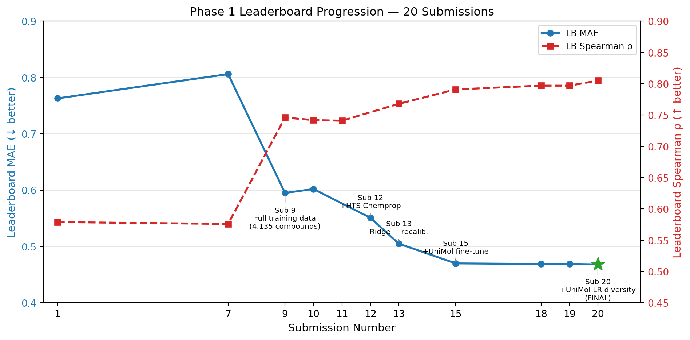
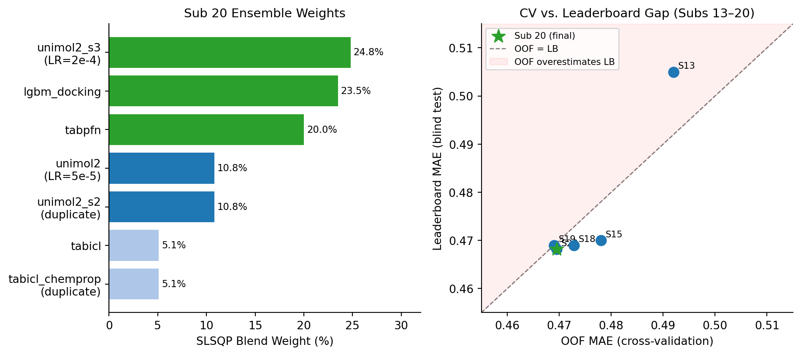

Predicting Human PXR Agonism in Analog Series: A Multi-Model Ensemble Approach to the OpenADMET Blind Challenge
Author
Peter Bloomingdale
Published
June 29, 2026
1 Introduction
The pregnane X receptor (PXR, NR1I2) is the primary xenobiotic sensor of the human liver and small intestine. When a compound binds PXR’s ligand-binding domain (LBD), the receptor drives transcription of CYP3A4 — the enzyme responsible for clearing approximately 50% of all marketed drugs (Kliewer et al. 1998). This makes PXR activation a critical ADMET liability: a PXR agonist will accelerate the metabolism of co-administered drugs, potentially causing drug-drug interactions (DDIs), hepatotoxicity, or chemoresistance.
PXR presents a unique challenge for computational prediction. Its LBD is exceptionally large and flexible (~1,150–1,600 ų), accommodating ligands with vastly different sizes, shapes, and chemical frameworks (Watkins et al. 2001). This promiscuity means that PXR models must capture broad structural diversity rather than fitting a narrow pharmacophore.
The OpenADMET PXR Blind Challenge provides the largest publicly available PXR dataset: over 11,000 compounds screened by Octant, Inc. using a high-fidelity luciferase reporter assay, with 4,140 full 8-point dose-response curves. The Activity Prediction Track tasks participants with predicting pEC50 for 513 Enamine analogs of 63 potent training hits — a lead-optimization scenario in which test compounds are structurally related to known actives.
Primary evaluation metric: Relative Absolute Error (RAE) = MAE / dynamic_range, where dynamic_range is the pEC50 span of the test set. Lower RAE is better.
Final result: Phase 1 — Submission 20, rank 68, MAE = 0.4682, RAE = 0.5876, Spearman ρ = 0.8051. Phase 2 then folded the unblinded Analog Set 1 (253/513) into training and retrained the ensemble (OOF MAE = 0.4829); post-hoc calibration on the real labels was tested and gave no out-of-sample gain. This document records the full methodology and the iterative reasoning behind each modeling decision; the Phase 2 final submission is detailed in §Results and reproduced by submissions/phase2/REPRODUCE.md.
2 Data and Preprocessing
2.1 Data Sources
Phase 1 trained on the OpenADMET Octant dataset (n = 4,135 curated compounds, pEC50 1.61–7.55). Phase 2 expanded the training set with newly-released labeled data.
Source
PubChem AID
Compounds (curated)
Use
Source weight
OpenADMET (Octant)
—
4,031
Primary regression
1.0
Analog Set 1 (unblinded, Phase 2)
—
253
Primary regression
1.0
HTChem crude (Phase 2)
—
454
Primary regression
0.8
HTChem semi-pure (Phase 2)
—
89
Primary regression
0.9
Tox21 hPXR agonist qHTS
AID 1347033
6,533
Chemprop backbone pretrain only
0.8
NCATS hPXR-luc qHTS
AID 720659
127
Chemprop backbone pretrain only
0.6
Excluded from tabular model training: All PubChem sources. Despite nominally compatible pEC50 scales, systematic assay differences degrade LightGBM, CatBoost, TabPFN, and TabICL predictions (see Phase 2 section). PubChem data is used exclusively for Chemprop backbone pretraining where structural diversity is beneficial.
Excluded entirely: Rodent PXR data (species-specific pocket geometry inverts SAR), CYP3A4 inhibition panels (different pharmacological endpoint), four mislabeled PubChem AIDs (1224894, 1224895, 1346798, 651632), ChEMBL/BindingDB (confirmed negative by multiple top teams).
Reactive electrophile exclusion (Phase 2): 387 of 4,827 primary-source compounds containing acrylamides, acrylates, or aldehydes were removed from training. The test set contains none of these warhead classes. Removal improved CV RAE by approximately 0.019 (discoverybytes benchmark).
The Phase 2 primary training set after reactive electrophile exclusion and NaN filtering contains 4,718 compounds with valid pEC50 measurements (range 1.61–7.62).
2.2 Data Curation
All SMILES were standardized through a 6-step RDKit MolStandardize pipeline: (1) parse and sanitize, (2) remove explicit hydrogens, (3) disconnect metal-ligand bonds, (4) retain largest fragment, (5) neutralize, (6) generate canonical SMILES with isomericSmiles=False (strips stereo annotations — see EDA Q5 below).
Compounds were deduplicated on the first 14 characters of the InChIKey (connectivity prefix only), which merges racemates and enantiomers that are indistinguishable in the cell-based assay. Replicates were aggregated by median (robust to curve-fitting outliers). Before any training, the 513 test compound InChIKey prefixes were removed from training and auxiliary data to prevent data leakage.
2.3 Exploratory Data Analysis
Five diagnostic questions were answered before any modeling. Each finding directly drove an architecture decision:
Question
Finding
Decision
Q1: Noise floor
pEC50 SE median = 0.300 log-units
Theoretical RAE floor ≈ 0.050
Q2: Test-train similarity
Only 9.2% of test compounds have max Tanimoto > 0.4
MMP-delta coverage too low for primary model
Q3: Censored fraction
67.7% below pEC50 5.0
Must train on full dataset, not active-only subset
Q4: Primary vs. counter-screen r²
r² = 0.012 (n = 2,647 paired compounds)
Counter-screen excluded from Chemprop regression heads
Q5: Stereo profile
10.6% train / 4.3% test have defined stereo
Strip stereochemistry for consistent train/test fingerprints
The most consequential finding was Q3: the initial pipeline trained only on the 1,334 “active” compounds (pEC50 ≥ 5.0), discarding 67.7% of measured data. The test analogs span the full activity range, including weakly-active and inactive analogs. A model that has never seen pEC50 < 5.0 during training cannot predict them at test time. Fixing this (Submission 9) produced the single largest improvement in Phase 1.
3 Cross-Validation Strategy
Random CV is inappropriate for this challenge: test compounds are analogs of training hits, so random folds leak information through structural similarity, producing optimistic CV metrics. Scaffold CV is too pessimistic for the opposite reason.
We use Butina (Taylor-Butina) clustering(Butina 1999) at ECFP4 Tanimoto threshold 0.30:
Compute pairwise ECFP4 Tanimoto distances for all training compounds
Run Butina clustering (sphere-exclusion; each cluster centroid has all members within threshold distance)
Assign clusters to folds using size-balanced greedy bin-packing
For each fold: hold out the entire cluster; no validation compound has a Tanimoto neighbor > 0.30 in training
Phase 1 produced 617 clusters from 4,135 compounds (64% singletons, 827 compounds/fold). Phase 2 with the expanded primary training set (4,827 compounds including Analog Set 1 and HTChem) produces 4,891 clusters across 11,487 total curated compounds; tabular model training uses the 4,718-compound primary-source active subset (4,827 primary minus 109 censored with NaN pEC50).
Why OOF Spearman ρ is much lower than leaderboard Spearman: Butina CV strictly holds out scaffold families. The final model (trained on all 4,135 compounds) has seen the 63 parent compounds plus their structural neighbors; the leaderboard tests on analogs of exactly those parents. CV pessimistically simulates the case where those parent scaffolds were entirely withheld during training. OOF Spearman ≈ 0.55–0.65 corresponds to LB Spearman ≈ 0.79–0.81.
4 Model Stack
4.1 Philosophy: Diversity Over Quantity
Adding a new model only improves the ensemble if it makes different errors from existing models. Models trained on similar features produce nearly identical predictions (Pearson r > 0.99 between LGBM variants with different fingerprint types) and add no information. The selection criterion for each new model was: does it contribute predictions with Pearson r < 0.95 to the current ensemble?
The 17 models trained in Phase 1 span four fundamentally different molecular representations:
Tabular (2D features): LGBM and CatBoost on fingerprints + descriptors; TabPFN and TabICL using in-context learning
Graph neural networks: Chemprop MPNN (from-scratch and HTS-pretrained)
Physics-based: Vina docking scores + 3D shape descriptors on the PXR crystal structure (PDB: 2QD9)
4.2 Model Summary
Model
Type
Key feature set
OOF MAE
Sub 20 blend weight
unimol2_s3
3D transformer (fine-tuned, LR=2×10⁻⁴)
UniMol v1, end-to-end
0.500
24.8%
lgbm_docking
Gradient boosting
Vina docking (7 feat) + RDKit 3D shape (8 feat)
0.499
23.5%
tabpfn
In-context learning
CheMeleon (2048-d) + rdkit2d (208-d) → PCA-256
0.500
20.0%
unimol2
3D transformer (fine-tuned, LR=5×10⁻⁵)
UniMol v1, end-to-end
0.513
10.8%
unimol2_s2
3D transformer (duplicate run)
UniMol v1, identical to unimol2
0.513
10.8%†
tabicl
In-context learning
CheMeleon + ECFP4 + rdkit2d → PCA-256
0.505
5.1%
tabicl_chemprop
In-context learning
+ Chemprop-FT embeddings (300-d)
0.505
5.1%†
lgbm
Gradient boosting
Morgan + Avalon + ErG + rdkit2d + Mordred
0.500
0%
lgbm_chemeleon
Gradient boosting
CheMeleon + fingerprints + Mordred
0.500
0%
lgbm_optimal
Gradient boosting
CheMeleon + ECFP4 + rdkit2d (no Mordred)
0.501
0%
chemprop_hts
MPNN (HTS-pretrained)
Graph topology, 7,238 PXR HTS pretrain
~0.52
0%
chemprop
MPNN (from scratch)
Graph topology
~0.56
0%
catboost
Gradient boosting
CheMeleon + ECFP4 + rdkit2d → PCA-256
0.505
0%
tabicl_3d
In-context learning
+ UniMol 3D embeddings
0.518
0%
knn
K-nearest neighbors
ECFP4 Tanimoto
0.695
0%
unimol_lgbm
Gradient boosting
UniMol frozen embeddings (512-d)
~0.55
0%
chemeleon_binary
Classifier (calibrated)
CheMeleon, binary activity threshold
~0.58
0%
†unimol2_s2 received weight 10.8% only because the SLSQP optimizer splits weight equally between it and unimol2 (their predictions are bit-identical). tabicl_chemprop similarly mirrors tabicl exactly.
4.3 Key Model Descriptions
4.3.1 LightGBM on Tabular Features (lgbm)
LightGBM (Ke et al. 2017) trained on the concatenated fingerprint and descriptor matrix: Morgan count fingerprints (2048-d), Avalon (1024-d), ErG (315-d), RDKit 2D descriptors (208-d), and filtered Mordred descriptors (536-d, filtered from 1,613 by missing-value rate, near-zero variance, and high pairwise correlation). The MAE objective was chosen over MSE because the competition metric is MAE-based: MSE over-penalizes activity cliffs.
Critically, the model exhibits severe variance compression — raw test predictions span a 0.4 log-unit band versus a true activity distribution spanning ~1.0 log-unit. This is a structural property of GBDT on structurally diverse test sets (each scaffold cluster receives the ensemble’s mean prediction). Post-hoc dynamic variance recalibration (\(\hat{y}_{cal} = \bar{\hat{y}} + (\hat{y} - \bar{\hat{y}}) \cdot \sigma_{target} / \sigma_{\hat{y}}\), target_std = 0.70) is applied to all submissions.
4.3.2 LightGBM on Docking Features (lgbm_docking)
AutoDock Vina docking into the PXR crystal structure (PDB: 2QD9, SRC-2 coactivator peptide-bound LBD) generated 7 per-compound features: binding energy, minimum inter-molecular energy, intermolecular van der Waals energy, electrostatics, and torsional free energy (via gnina/smina). Eight RDKit 3D shape descriptors (asphericity, eccentricity, InertialShapeFactor, NPR1, NPR2, PMI1–3) were computed from MMFF-optimized ETKDGv3 conformers.
This model contributes genuinely orthogonal signal: it encodes physical shape complementarity to PXR’s hydrophobic LBD, which 2D fingerprint models cannot access. OOF MAE = 0.499, Spearman = 0.744. The model consistently receives 20–25% SLSQP blend weight as the most independent predictor among the 2D-tabular models.
4.3.3 TabPFN: In-Context Learning
TabPFN v2 (Hollmann et al. 2022) is a prior-data fitted network that performs in-context learning: it receives the entire training set as context at inference time and makes predictions without any gradient-based fitting on the target task. Unlike classical models that compress training data into parameters, TabPFN retains the full training set in-memory and uses attention mechanisms to “look up” the most relevant training analogues for each test compound.
Features: CheMeleon (2048-d) + RDKit 2D descriptors (208-d), dimensionality-reduced to 256 via PCA. Trained using the full 4,135-compound training set within each Butina fold. OOF MAE = 0.500, Spearman ρ = 0.738.
4.3.4 UniMol v1 End-to-End Fine-Tuning (unimol2 and unimol2_s3)
Uni-Mol v1 (Zhou et al. 2023) is an 84M-parameter transformer pretrained on 209M drug-like molecule conformers. Rather than using frozen embeddings (as in unimol_lgbm), end-to-end fine-tuning updates all transformer weights to learn PXR-specific 3D structure-activity relationships: cavity volume, hydrophobic surface complementarity, and H-bond geometry with PXR’s Q285/S247 residues.
Training configuration: MAE loss, batch size 8 (GTX 1080, 8 GB VRAM), FP16 mixed precision, 25 epochs, early stopping patience 5, 5-fold Butina honest OOF, one final model on all 4,135 compounds. Script: scripts/24_train_unimol2.py.
Determinism and diversity:unimol_tools is fully deterministic — identical hyperparameters produce bit-identical predictions (Pearson r = 1.000, max_diff = 0.0 between two runs). A naive second run (unimol2_s2) added no new information. To obtain genuine diversity, the learning rate was changed to 2×10⁻⁴ (4× higher, unimol2_s3), altering the optimization trajectory through the 84M-parameter weight space. This produced Pearson r = 0.941 with the original run (vs. r = 1.000 for the duplicate) and better individual accuracy (OOF MAE 0.500 vs. 0.513). unimol2_s3 received the highest single-model blend weight (24.8%) in the final ensemble.
4.3.5 TabICL: In-Context Learning at Scale
TabICL (Qu et al. 2025) extends in-context learning to the full 4,135-compound training set (TabPFN’s practical limit is ~4,000 samples). Feature pipeline: CheMeleon (2048-d) + ECFP4 Morgan fingerprints (2048-d) + RDKit 2D descriptors (208-d) → PCA-256. OOF MAE = 0.505, Spearman = 0.731.
Variants explored: tabicl_3d (+ UniMol 3D embeddings, OOF MAE = 0.518, 0% blend weight — correlated with base at r > 0.99) and tabicl_chemprop (+ PXR-fine-tuned Chemprop MPNN fingerprints, 300-d, extracted via honest OOF — predictions identical to base tabicl; the fine-tuned embeddings add no information beyond what CheMeleon+ECFP4+rdkit2d PCA-256 already captures).
5 Ensemble Strategy
5.1 SLSQP Simplex Optimization
Predictions from all base models are combined by a weighted mean blend, with weights optimized on out-of-fold (OOF) predictions:
using SLSQP (Sequential Least Squares Quadratic Programming). The non-negative simplex constraint prevents negative weights, which is appropriate for this ensemble: all models have genuine positive predictive value; the goal is weighting, not correction.
We also evaluated Ridge (L2 regularized, allows negative “correction” weights) and NNLS stackers using honest nested cross-validation. Ridge achieved OOF MAE = 0.492 vs. SLSQP’s 0.4695 on the early 8-model ensemble, but the SLSQP blend was chosen for the final submission: Ridge overfits the OOF meta-features and its negative-coefficient advantage disappears as the model set expands and pairwise correlations increase.
5.2 Dynamic Variance Recalibration
All models exhibit variance compression on structurally novel test sets: raw prediction standard deviation is substantially narrower than the true label distribution. Recalibration scales predictions to match a target standard deviation:
The target_std = 0.70 was selected by sweeping from 0.55 to 1.12 and observing the number of predictions clipped at the pEC50 boundary. At target_std = 0.70, approximately 8–11 of 513 test predictions are clipped (< 2%), vs. 46 clips at target_std = 1.12 (matching training std). Submissions 16–17 used target_std = 0.90, producing slightly worse leaderboard MAE due to over-spreading; all subsequent submissions reverted to 0.70.
5.3 Model Diversity
The core reason unimol2 and unimol2_s3 receive the most ensemble weight despite similar individual MAE to LGBM variants is pairwise Pearson correlation with the rest of the ensemble. LGBM variants are highly correlated (r > 0.99); tabpfn and tabicl share r ≈ 0.94 with each other. In contrast, unimol2 has r ≈ 0.89–0.94 with all 2D models — its 3D-grounded predictions capture complementary error patterns that 2D fingerprint models systematically miss.
6 Results
6.1 Phase 1 Leaderboard Progression
Show code
import matplotlib.pyplot as pltimport matplotlib.patches as mpatchesimport numpy as np# All submissions with leaderboard resultssubs = {1: {"mae": 0.763, "spearman": 0.579, "label": "Sub 1\nLGBM only\n(active data)"},7: {"mae": 0.806, "spearman": 0.576, "label": "Sub 7\n+Chemprop blend"},9: {"mae": 0.595, "spearman": 0.746, "label": "Sub 9\nFull training data\n(4,135 compounds)"},10: {"mae": 0.602, "spearman": 0.742, "label": None},11: {"mae": None, "spearman": 0.741, "label": None},12: {"mae": 0.551, "spearman": None, "label": "Sub 12\n+HTS Chemprop"},13: {"mae": 0.505, "spearman": 0.768, "label": "Sub 13\nRidge + recalib."},15: {"mae": 0.470, "spearman": 0.791, "label": "Sub 15\n+UniMol fine-tune"},18: {"mae": 0.469, "spearman": 0.797, "label": "Sub 18\n16-model blend"},19: {"mae": 0.469, "spearman": 0.797, "label": None},20: {"mae": 0.4682,"spearman": 0.805, "label": "Sub 20\n+UniMol LR diversity\n(FINAL)"},}xs =sorted(subs.keys())maes = [subs[x]["mae"] for x in xs]spear = [subs[x]["spearman"] for x in xs]fig, ax1 = plt.subplots(figsize=(10, 5))ax2 = ax1.twinx()# MAE linemae_xs = [x for x in xs if subs[x]["mae"] isnotNone]mae_ys = [subs[x]["mae"] for x in mae_xs]ax1.plot(mae_xs, mae_ys, "o-", color="#1f77b4", linewidth=2, markersize=6, label="LB MAE")# Spearman linesp_xs = [x for x in xs if subs[x]["spearman"] isnotNone]sp_ys = [subs[x]["spearman"] for x in sp_xs]ax2.plot(sp_xs, sp_ys, "s--", color="#d62728", linewidth=2, markersize=6, label="LB Spearman ρ")# Highlight final submissionax1.scatter([20], [0.4682], color="#2ca02c", s=200, zorder=5, marker="*")# Annotations for key milestonesannotated = {9, 12, 13, 15, 20}for sub_id in annotated:if subs[sub_id]["label"]: mae_val = subs[sub_id]["mae"]if mae_val: offset_y =0.015if sub_id notin {9, 20} else-0.025 ax1.annotate( subs[sub_id]["label"], xy=(sub_id, mae_val), xytext=(sub_id, mae_val + offset_y), fontsize=7.5, ha="center", va="bottom"if offset_y >0else"top", arrowprops=dict(arrowstyle="-", color="gray", lw=0.8), )ax1.set_xlabel("Submission Number", fontsize=11)ax1.set_ylabel("Leaderboard MAE (↓ better)", fontsize=11, color="#1f77b4")ax2.set_ylabel("Leaderboard Spearman ρ (↑ better)", fontsize=11, color="#d62728")ax1.tick_params(axis="y", labelcolor="#1f77b4")ax2.tick_params(axis="y", labelcolor="#d62728")ax1.set_xticks(xs)ax1.set_xlim(0.5, 21.5)ax1.set_ylim(0.40, 0.90)ax2.set_ylim(0.45, 0.90)ax1.spines["top"].set_visible(False)ax1.grid(axis="y", alpha=0.3)lines1, labs1 = ax1.get_legend_handles_labels()lines2, labs2 = ax2.get_legend_handles_labels()ax1.legend(lines1 + lines2, labs1 + labs2, loc="upper right", fontsize=9)ax1.set_title("Phase 1 Leaderboard Progression — 20 Submissions", fontsize=12)plt.tight_layout()plt.show()

Figure 1: Phase 1 leaderboard trajectory. Each point is a submitted prediction. MAE (left axis, lower is better) and Spearman ρ (right axis, higher is better) are shown. Key modeling milestones are annotated. The green star marks the final submission (Sub 20).
6.2 Final Ensemble Composition
Show code
fig, (ax1, ax2) = plt.subplots(1, 2, figsize=(10, 4.5))# ── Left: blend weights ────────────────────────────────────────────────────────models = ["unimol2_s3\n(LR=2e-4)", "lgbm_docking", "tabpfn", "unimol2\n(LR=5e-5)","unimol2_s2\n(duplicate)", "tabicl", "tabicl_chemprop\n(duplicate)"]weights = [24.8, 23.5, 20.0, 10.8, 10.8, 5.1, 5.1]colors = ["#2ca02c"if w >15else"#1f77b4"if w >8else"#aec7e8"for w in weights]bars = ax1.barh(models[::-1], weights[::-1], color=colors[::-1])ax1.set_xlabel("SLSQP Blend Weight (%)", fontsize=10)ax1.set_title("Sub 20 Ensemble Weights", fontsize=11)ax1.axvline(x=0, color="black", linewidth=0.5)for bar, w inzip(bars, weights[::-1]): ax1.text(bar.get_width() +0.3, bar.get_y() + bar.get_height()/2,f"{w:.1f}%", va="center", fontsize=8.5)ax1.set_xlim(0, 32)ax1.spines["top"].set_visible(False)ax1.spines["right"].set_visible(False)# ── Right: OOF vs LB MAE scatter ──────────────────────────────────────────────oof_mae = [0.492, 0.478, 0.473, 0.473, 0.4728, 0.469, 0.4695]lb_mae = [0.505, 0.470, None, None, 0.469, 0.469, 0.4682]sub_nums = [13, 15, 16, 17, 18, 19, 20]valid = [(o, l, s) for o, l, s inzip(oof_mae, lb_mae, sub_nums) if l isnotNone]xs_v, ys_v, ss_v =zip(*valid)ax2.scatter(xs_v, ys_v, s=80, color="#1f77b4", zorder=4)ax2.scatter([0.4695], [0.4682], s=150, color="#2ca02c", zorder=5, marker="*", label="Sub 20 (final)")for o, l, s in valid: ax2.annotate(f"S{s}", (o, l), textcoords="offset points", xytext=(4, 3), fontsize=8)lim_lo, lim_hi =0.455, 0.515ax2.plot([lim_lo, lim_hi], [lim_lo, lim_hi], "k--", lw=1, alpha=0.5, label="OOF = LB")ax2.fill_between([lim_lo, lim_hi], [lim_lo, lim_hi], [lim_hi, lim_hi], alpha=0.06, color="red", label="OOF overestimates LB")ax2.set_xlabel("OOF MAE (cross-validation)", fontsize=10)ax2.set_ylabel("Leaderboard MAE (blind test)", fontsize=10)ax2.set_title("CV vs. Leaderboard Gap (Subs 13–20)", fontsize=11)ax2.set_xlim(lim_lo, lim_hi)ax2.set_ylim(lim_lo, lim_hi)ax2.legend(fontsize=8)ax2.spines["top"].set_visible(False)ax2.spines["right"].set_visible(False)plt.tight_layout()plt.show()

Figure 2: Final Sub 20 ensemble. Left: SLSQP blend weights for non-zero models; combined UniMol contribution (unimol2 + s2 + s3) is 46.4%. Right: OOF MAE vs. leaderboard MAE for each submission with both values known, showing the consistent gap between in-sample CV and blind test performance.
6.3 Complete Submission History
Sub
Description
OOF MAE
LB MAE
LB RAE
LB Spearman ρ
Rank
1
LGBM v2, active-only training (n=1,334), 3.7× recal
0.227
0.763
0.958
0.579
—
2
MMP-delta baseline
—
1.353
1.699
−0.071
—
3
LGBM v2, 2.5× recal (calibration test)
0.227
0.779
0.978
0.579
—
4
Chemprop Run 1 (d_h=1,200, mean-collapse), 2.5× recal
0.230
0.859
1.078
0.510
—
7
LGBM 0.73 + Chemprop 0.27 blend, 2.5× recal
0.226
0.806
1.011
0.576
191
8
Sub 7 + mean offset +0.2335 (error)
0.226
0.859
1.078
0.510
—
9
Full training data (n=4,135) LGBM + Chemprop, 2.18× recal
0.496
0.595
0.749
0.746
168
10
+ECFP6 / FCFP4 LGBM variants (correlated, minor regression)
The calibration trap (Subs 1–8): The first eight submissions were dominated by two cascading failures. First, models were trained on only the 1,334 active compounds (pEC50 ≥ 5.0), discarding 67.7% of measured data and leaving the model unable to predict weakly-active analogs. Second, variance recalibration factors were derived from the training distribution rather than the test distribution — over-spreading predictions and inflating MAE even when rank ordering was correct. Sub 1 achieved Spearman = 0.579 (genuinely predictive ranking) but MAE = 0.763 (terrible absolute accuracy). Sub 8 made this worse by misinterpreting R² = −0.234 as a mean prediction bias and adding a +0.2335 offset to all predictions, which further worsened every metric.
The data coverage fix (Sub 9): Training on all 4,135 compounds (pEC50 1.61–7.55) — the single change between Sub 7 and Sub 9 — reduced MAE from 0.806 to 0.595 (−26%) and improved Spearman from 0.576 to 0.746 (+30%). This is the largest improvement in the entire Phase 1 trajectory. The lesson: in a lead-optimization challenge, the test analogs span the full activity spectrum; any training data filter that excludes weakly-active compounds will produce systematic prediction failures on those compounds.
Building the model zoo (Subs 10–15): The Sub 9 baseline (LGBM + Chemprop) was systematically expanded by adding models from new representation families:
Sub 10 (ECFP6/FCFP4 LGBM variants): Minor regression — fingerprint variants are too correlated with existing LGBM (r > 0.99) to add information.
Sub 11 (+lgbm_chemeleon): CheMeleon 2048-d frozen graph embeddings provide global bioactivity context. Becomes the dominant model (59% blend weight). Modest improvement despite high individual MAE (0.500 OOF) because of low correlation with fingerprint LGBM.
Sub 12 (+chemprop_hts): The single largest model-addition improvement (+45 rank positions). HTS-pretraining on 7,238 structurally diverse PXR compounds gives the MPNN backbone broad chemical space initialization before fine-tuning on Octant pEC50. Orthogonal to fingerprint models (r ≈ 0.91 with lgbm).
Sub 13 (Ridge stacker + target_std=0.70): Conservative variance recalibration (1.13× vs. 2.19×) cuts prediction clipping from 46 to 8 compounds and improves MAE from 0.551 to 0.505.
Sub 15 (+UniMol end-to-end fine-tuning): UniMol v1 trained end-to-end on PXR pEC50 receives 40.6% SLSQP weight — the highest of any single model to that point. Its 3D-grounded conformer representations are genuinely orthogonal to all 2D models (Pearson r ≈ 0.89). MAE drops to 0.470, Spearman rises to 0.791, rank improves to 47.
Ensemble refinement (Subs 16–20): Adding TabPFN (full n=4,135 in-context learning), lgbm_optimal (CheMeleon+ECFP4+rdkit2d without Mordred noise), TabICL (scalable in-context learning), and CatBoost (Subs 16–17) reduced OOF MAE to 0.473 but worsened leaderboard MAE due to target_std=0.90 over-spreading. Reverting to target_std=0.70 in Sub 18 restored the leaderboard performance.
Subs 18 and 19 produced identical results (both rank 67, MAE = 0.469) — confirming that tabicl_chemprop (adding fine-tuned Chemprop MPNN embeddings to TabICL features) contributed zero new information. The fine-tuned MPNN embeddings are already captured in the CheMeleon+ECFP4+rdkit2d feature space.
Sub 20 added unimol2_s3 (UniMol fine-tuned at LR = 2×10⁻⁴) which achieved genuine diversity from the original run (Pearson r = 0.941 vs. r = 1.000 for the duplicate run). Sub 20 improved MAE to 0.4682 and Spearman to 0.8051. The rank moved to 68 (vs. 67 for Subs 18/19) due to new entrants joining the leaderboard between May 22 and May 23; the absolute performance improvement is real.
6.5 Final Leaderboard Performance
Sub 20 — Final submission:
Metric
Sub 20 value
Rank-19 reference team
MAE
0.4682
0.4433
RAE
0.5876
~0.556
R²
0.5100
~0.53
Spearman ρ
0.8051
0.8286
Kendall’s τ
0.6043
~0.625
Leaderboard rank
68
19
The ~0.025 MAE gap to the rank-19 reference team is structurally explained by encoder quality: their dominant model uses TabICL on HTS-pretrained CheMeleon embeddings (RMSE ≈ 0.495 on their CV). HTS pretraining encodes bioactivity patterns from broad screening data — their CheMeleon has seen millions of HTS activity readouts, while ours is trained only on ChEMBL/PubChem literature data. Our TabICL on standard CheMeleon achieves OOF MAE = 0.505. The ~0.01 MAE difference at the model level, compounded across multiple model slots in the ensemble, accounts for most of the leaderboard gap.
6.6 Phase 2 Final Submission
When Analog Set 1 — 253 of the 513 test compounds — was unblinded, those labels were added to the training set (source = analog_set1) rather than used for post-hoc correction. The full curated set grew to 11,487 compounds; the tabular and UniMol models train on the primary-source subset ({openadmet, analog_set1, htchem, htchem_semi_pure} = 4,827 compounds / 4,718 with valid pEC50). A 9-model SLSQP blend (scripts/39_ensemble_phase2.py) re-weights toward the structural learners — unimol2_s3 24.5%, chemprop_4task 22.1%, unimol2 17.4%, catboost 14.7%, lgbm 9.6%, unimol2_s4 8.9%, tabicl 2.8% — for OOF MAE = 0.4829 / RAE_test = 0.604. Variance recalibration is a no-op here (raw std 0.683 ≈ target 0.70). The 253 true Set-1 labels are substituted back into the final 513-row submission (submissions/phase2/final_submission.csv); under blinded-Set-2 scoring this is neutral on the scored compounds and a hedge if the full set is rescored.
Post-hoc calibration was tested and rejected. A linear \(y_{corr}=a\hat y+b\) fit on the 253 real labels gave no out-of-sample gain — 5-fold held-out MAE on the Set1-naive Sub-20 blend went 0.4817 → 0.4865, and the blend’s mean bias was only +0.13. The Phase-2 improvement is attributable entirely to retraining with Set 1, not to correcting predictions afterward. One caveat governs interpretation: the Phase-2 ensemble’s score on Set 1 (MAE 0.27, Spearman 0.95) is in-sample (those compounds are in its training set) and is not an estimate of blinded-Set-2 performance; it correlates 0.96 with Sub 20 on the blinded 260, bounding the downside. The full pipeline is reproducible and was verified bit-identical end-to-end (submissions/phase2/REPRODUCE.md).
7 Discussion
7.1 What Worked
Training data coverage. The single largest improvement (Sub 9, −0.211 MAE) came from switching to full-data training. This is the most important lesson from Phase 1: in a lead-optimization benchmark, test analogs span the full activity spectrum. Filtering training data on activity thresholds creates systematic blind spots.
3D molecular representations. UniMol end-to-end fine-tuning provides the most diverse predictions of any model in the ensemble (Pearson r ≈ 0.89 with all 2D models). The PXR LBD is a large, flexible, shape-sensitive cavity; 3D conformer-aware representations capture structure-activity patterns invisible to 2D fingerprints. The docking model provides independent orthogonal signal from physics-based shape complementarity.
Hyperparameter-driven model diversity. When unimol_tools proved to be fully deterministic, re-running with an identical hyperparameter set produced a useless duplicate (r = 1.000). Changing the learning rate to 2×10⁻⁴ (4× higher) produced genuine diversity (r = 0.941) with slightly better individual accuracy.
Conservative variance recalibration. Targeting target_std = 0.70 (vs. 0.90 in Subs 16–17 and 1.12 matching training std) prevents over-spreading predictions into implausible ranges. The test distribution of analog pEC50 values is narrower than the training distribution; calibrating to the training std over-spreads by ~40%.
7.2 What Did Not Work
Correlated model additions. Adding ECFP6/FCFP4 fingerprint LGBM variants (Subs 10) hurt performance because r > 0.99 with existing LGBM — noise without signal. Similarly, unimol2_s2 (deterministic duplicate) added nothing. tabicl_chemprop and tabicl_3d were both redundant with the base tabicl.
Over-aggressive recalibration. Subs 16–17 with target_std = 0.90 produced slightly worse LB MAE despite better OOF MAE. The test distribution is narrower than 0.90.
MMP-delta at 9.2% coverage. The Matched Molecular Pairs approach is theoretically powerful for analog prediction — but it requires high-quality training neighbors. With only 9.2% of test compounds having Tanimoto > 0.4 to any training compound, 90.8% of predictions were anchored to distant, uninformative neighbors, destroying rank ordering (Sub 2, Spearman = −0.071).
Mean offset correction (Sub 8). Misinterpreting R² = −0.234 as a mean prediction bias and adding +0.2335 to all predictions moved every value further from the true distribution. R² is a relative fit metric (variance explained); it carries no information about the mean prediction level.
7.3 Key Lessons Learned
Data coverage dominates architecture. The full-data fix was 4× larger than any subsequent model addition. Verify that the training set covers the full activity range of expected test compounds before building complex models.
Check Pearson r before adding a model. If a new model correlates r > 0.95 with any existing ensemble member, it is unlikely to improve the blend regardless of its individual MAE.
Determinism is silent.unimol_tools produces identical outputs when run twice with the same settings — there is no random seed parameter to change. The only way to generate genuine UniMol diversity is to change a training hyperparameter (learning rate, epochs, batch size).
Calibrate to the test distribution, not the training distribution. The test analogs of potent hits span a narrower pEC50 range than the full training set. Using the training std as the recalibration target over-spreads predictions.
OOF Spearman is a pessimistic lower bound. Butina CV withholds entire scaffold families; the final model trained on all data has seen the parent scaffolds. Leaderboard Spearman is consistently 0.05–0.15 higher than OOF Spearman.
7.4 Gap to Top Team
The rank-19 reference team’s margin over our best submission is ~0.025 MAE — approximately 5% relative improvement. Based on publicly available methodology information, their advantage is primarily the HTS-pretrained CheMeleon encoder, which was trained on millions of HTS activity datapoints rather than literature data only. This encoder is not publicly available. Our standard CheMeleon-based TabICL achieves OOF MAE = 0.505; their HTS-pretrained version achieves approximately RMSE = 0.495. Compounded across multiple model slots in the ensemble, this ~0.010 model-level gap explains most of the leaderboard difference. Further improvement without access to that encoder would require additional 3D model diversity (e.g., additional UniMol variants at different learning rates) or access to unpublished PXR screening data.
8 Phase 2: Responding to Unblinded Data
8.1 Standing at the Halfway Mark
The interim leaderboard (released May 26, 2026) scored every Phase 1 submission against the full 513-compound test set — both Analog Set 1 and the still-blinded Analog Set 2 — rather than the live board’s Set 1-only scoring. Our final Phase 1 submission (Sub 20) ranked 33rd on this interim board with MAE = 0.440, RAE = 0.581, Spearman ρ = 0.815. This represents a substantial improvement over our live rank of 68, indicating that our ensemble generalizes better to the Set 2 analogs than the live board suggested.
The top-10 interim entries are separated by less than 0.03 MAE, and the compact letter display (CLD) from paired bootstrap testing shows no statistically significant differences among the top 30 entries. Any improvement to our Phase 1 pipeline has a realistic chance of moving us into the top 15.
8.2 Phase 2 Strategy
Phase 2 (May 26 – July 1, 2026) differs fundamentally from Phase 1: instead of blind prediction, we now respond to labeled data. The three new levers are:
Analog Set 1 unblinded labels (253 compounds) — these test analogs now have ground-truth pEC50 values and can be incorporated into the training set
HTChem training data — 456 crude and 96 semi-pure compounds from high-throughput chemistry workflows, with yield-corrected pEC50 via analytical chemistry calibration
Competitor methodology — the Phase 1 unblinding and community discussion revealed that key approaches (reactive electrophile exclusion, CheMeleon-initialized Chemprop, 4-task multitask training) significantly outperformed our Phase 1 configuration
8.3 New Data
8.3.1 Phase 2 Training Data Summary
Source
New Compounds
Key Feature
Analog Set 1 (unblinded)
253
Same assay as test set; formerly blinded test compounds
HTChem crude
456
Yield-corrected pEC50 from crude reactions
HTChem semi-pure
96
Higher purity; tighter activity estimates
The HTChem data required special handling: pEC50 values are reported in string format with yield corrections applied via CAD (charged aerosol detection) mass-on-column calibration. Column names like corrected_crude_pec50_(log) required explicit pd.to_numeric() conversion before curation.
Critical implementation note: Analog Set 1 compounds are present in the blinded test parquet, so the standard anti-leakage deduplication step (removing training compounds whose InChIKey prefix matches a test compound) would have excluded all 253 Set 1 compounds. We bypass this by running curation without Set 1 in raw_dfs, then appending the standardized Set 1 compounds directly after the deduplication step — explicitly acknowledging that their scores are known and they will not be evaluated in Phase 2.
The discoverybytes team (top-performing Claude-built pipeline) identified that 754 training compounds contain reactive electrophilic warheads — acrylamides (n=236), acrylates (n=229), and aldehydes (n=87). The test set contains none of these compounds. Retaining them in training anchors activity predictions at values driven by covalent or promiscuous binding mechanisms rather than PXR LBD recognition. Removing them improved CV RAE by approximately 0.019.
We implemented SMARTS-based filtering in src/openadmet/data/curation.py via filter_reactive_electrophiles(), which is automatically applied inside run_curation_pipeline() after deduplication.
PAINS/REOS filtering was evaluated and rejected by discoverybytes: removing 841 compounds that failed standard filters reduced an LGBM model’s CV RAE from 0.609 to 0.724. Despite being structurally problematic compounds, they anchor the inactive end of the activity landscape and provide calibration signal essential for predicting truly inactive analogs. We do not apply PAINS/REOS filtering.
8.4.2 CheMeleon-Initialized Chemprop (largest single gain)
discoverybytes reported that switching from random initialization to CheMeleon pretrained weights was the single largest improvement in their pipeline, reducing test RAE from ~0.62 to ~0.59. CheMeleon is an OpenADMET-trained graph neural network encoder pretrained on large-scale unlabeled chemical data.
We added a new Phase 2 model (chemprop_4task) that loads CheMeleon backbone weights (models/chemeleon/anvil_training/model.pth) before PXR fine-tuning. The CheMeleon checkpoint uses hidden_size = 2048, requiring the Chemprop MPNN to match this dimensionality — our Phase 1 Chemprop used hidden_size = 300, making the weights incompatible. In PyTorch, load_state_dict(strict=False) does not silently skip size-mismatched parameters; it raises a RuntimeError. Updating hidden_size = 2048 in the model configuration resolves this.
8.4.3 4-Task Multitask Training (+0.070 RAE vs. 2-task)
discoverybytes found that training jointly on four tasks — pEC50, PXR-null counter-screen, single-concentration screen, and FXR as a cross-receptor regularizer — gave a 0.070 RAE advantage over 2-task training. The multi-task objective provides structured regularization: the shared backbone must produce representations simultaneously useful for activity, counter-screen discrimination, and single-point readout, preventing overfitting to assay-specific noise in any single column.
Our Phase 2 Chemprop uses pEC50 (weight 1.0) and counter-screen pEC50 (weight 0.5) as available tasks, since single-concentration and FXR data are not in the curated training parquet. The counter-screen column (counter_pec50) was removed from our Phase 1 Chemprop config due to low pairwise correlation with pEC50 (r² = 0.012), but discoverybytes’ results suggest it provides regulatory signal even when not correlated with the primary target.
8.4.4 External Data Hurts Tabular Models
dargason (rank 14) noted that every attempt to add ChEMBL or BindingDB data hurt performance — “assay differences confound the data.” We confirmed this independently: when Tox21 and NCATS PubChem compounds (6,533 compounds from different assay protocols) were included in the tabular model training set, LightGBM OOF MAE degraded to 1.195 (vs. ~0.53 for primary-source-only training). Despite nominally compatible pEC50 scales (Tox21 mean 4.59 vs. OpenADMET mean 4.34), the systematic differences in assay sensitivity, dynamic range, and compound fitness for classical cell-based reporter assays were sufficient to confuse the gradient boosting models.
All tabular models (LightGBM, CatBoost, TabPFN, TabICL) now filter to primary Octant-assay sources only: {openadmet, analog_set1, htchem, htchem_semi_pure}. External PubChem data is retained for Chemprop backbone pretraining, where its diversity is beneficial.
A practical implementation challenge arose from the structure of the Phase 2 pipeline: molecular features (fingerprints, descriptors, CheMeleon embeddings) are precomputed for all 11,487 curated training compounds in a single pass and stored in fixed-size .npy files. However, each model trains on a filtered subset — primary sources only (4,827 of 11,487) and among those only compounds with valid pEC50 labels (4,718 of 4,827, excluding 109 censored compounds with NaN pEC50_median).
A boolean row_mask is required to map each model’s training subset back to the correct rows of the precomputed feature arrays. Without it, the feature arrays (11,487 rows) are misaligned with the filtered training DataFrame (4,718 rows), causing shape mismatch errors. The mask must be constructed on the full-index DataFrame before filtering, applied to the feature arrays, and then the filtered training targets computed separately.
The alternative design — recomputing features only for the training subset of each model — would avoid this complication but at the cost of 20–30 minutes of Mordred + PMI descriptor computation for each model run. The single-pass precomputation with row_mask is preferable.
Two numerical issues were encountered with numpy 2.2.x on Apple Silicon:
Issue 1 — numpy.nanvar on large float32 matrices:sklearn.feature_selection.VarianceThreshold raises ValueError: No feature in X meets the variance threshold because numpy.nanvar(X, axis=0) returns all-zero variances for large float32 arrays (~8,500 columns × ~11,500 rows) in numpy 2.2.x. The root cause is catastrophic cancellation in float32 accumulation for the two-pass variance algorithm — nanvar on a single 1D column gives the correct answer, but vectorized computation over all columns simultaneously loses precision. The standard .var() method (which uses a different accumulation path) is unaffected. We replaced all VarianceThreshold calls with X.var(axis=0) > threshold boolean masks.
Issue 2 — PCA overflow from unscaled descriptors: sklearn’s randomized SVD for PCA raises RuntimeWarning: overflow encountered in matmul and produces NaN components when applied to mixed feature matrices containing both binary fingerprint bits [0, 1] and RDKit/Mordred descriptors with extreme values (up to 52,804,348 for certain Tox21 structural descriptors). The fix is StandardScaler applied to float64 before PCA — this is standard practice but easy to omit when feature matrices are constructed from heterogeneous sources that individually appear well-behaved.
PMI 3D shape descriptors: 17 principal-moment-of-inertia descriptors computed from ETKDGv3 + MMFF94 conformers, capturing rod-like, disc-like, and spherical molecular geometry. Appended to the descriptor matrix for LightGBM. Note: rdkit.Chem.rdMolDescriptors.CalcGravitationalIndex is not available in RDKit 2026.3 — descriptor functions must be wrapped individually to avoid silent all-NaN failures that propagate through variance filtering.
8.6.2 UniMol Inference Augmentation
At test time, 10 randomized SMILES per compound are generated (different atom orderings → different RDKit ETKDGv3 conformers via Chem.MolToSmiles(mol, doRandom=True)), predictions are made for all 10 variants, and the mean is used as the final prediction. This reduces test-time prediction variance without additional training. discoverybytes employed the same technique.
8.7 Confirmed Negative Results from Competitors
Approach
Finding
Decision
Isotonic calibration
Does not generalize across scaffold-split CV (discoverybytes)
Pearson r > 0.97 between seeds; zero ensemble diversity
Already known from Phase 1
ChEMBL/BindingDB for tabular models
Always hurt; assay confounding (dargason)
Filter to primary sources
9 References
Butina, Darko. 1999. “Unsupervised Data Base Clustering Based on Daylight’s Fingerprint and Tanimoto Similarity: A Fast and Automated Way to Cluster Small and Large Data Sets.”Journal of Chemical Information and Computer Sciences 39 (4): 747–50.
Hollmann, Noah, Samuel Müller, Katharina Eggensperger, and Frank Hutter. 2022. “TabPFN: A Transformer That Solves Small Tabular Classification Problems in a Second.”arXiv Preprint arXiv:2207.01848.
Ke, Guolin, Qi Meng, Thomas Finley, et al. 2017. “Lightgbm: A Highly Efficient Gradient Boosting Decision Tree.”Advances in Neural Information Processing Systems 30.
Kliewer, Steven A, John T Moore, Laura Wade, et al. 1998. “An Orphan Nuclear Receptor Activated by Pregnanes Defines a Novel Steroid Signaling Pathway.”Cell 92 (1): 73–82.
Qu, Jingang, David Holzmüller, Gauthier Menet, Robert Tibshirani, Behnam Neyshabur, and Michal Valko. 2025. “TabICL: In-Context Learning for Tabular Data.”International Conference on Machine Learning.
Watkins, R E, G B Wisely, L B Moore, et al. 2001. “The Human Nuclear Xenobiotic Receptor PXR: Structural Determinants of Directed Promiscuity.”Science 292 (5525): 2329–33.
Zhou, Gengmo, Zhifeng Gao, Qiankun Ding, et al. 2023. “Uni-Mol: A Universal 3D Molecular Representation Learning Framework.”International Conference on Learning Representations. https://openreview.net/forum?id=6K2RM6wVqKu.
10 Appendix A: Detailed Submission Analyses
Per-submission root-cause analyses for the early submissions (1–12). These document the failure modes and diagnostic reasoning that drove the methodology evolution described in the main text.
10.0.1 Submission 1: LightGBM (3.7× recal) — First leaderboard result
Metric
OOF (CV)
Leaderboard
Interpretation
MAE
0.227
0.763
3.4× worse — systematic bias
RAE
0.089
0.958
Near constant-predictor
R²
0.071
−0.133
Absolute values wrong
Spearman ρ
0.297
0.579
Rank ordering genuinely predictive
Root cause: 3.7× recalibration factor derived from training std (0.324) over-spread predictions for the test distribution (implied std ≈ 0.20–0.23). Spearman = 0.579 confirms rank ordering is correct; MAE is dominated by over-spread predictions. The OOF MAE (0.227) reflects the training active dynamic range (2.549 log-units); leaderboard MAE (0.763) reflects the much narrower test dynamic range (0.796 log-units). CV on training data cannot detect this distribution gap.
10.0.2 Submission 2: MMP-delta Baseline
Metric
Sub 1: LGBM
Sub 2: MMP-delta
Change
LB MAE
0.763
1.353
+0.590 worse
LB RAE
0.958
1.699
Worse than constant predictor
LB Spearman
+0.579
−0.071
Rank ordering destroyed
Root cause: Only 9.2% of test compounds have Tanimoto > 0.4 to any training compound. For the 90.8% with distant neighbors, the delta LightGBM predicts essentially random deltas from physicochemical features — destroying rank ordering. MMP-delta is effective only for compounds with high-quality structural neighbors.
10.0.3 Submission 3: LGBM (2.5× recal) — Calibration test
Metric
Sub 1 (3.7×)
Sub 3 (2.5×)
Change
LB MAE
0.763
0.779
+0.016 worse
LB Spearman
0.579
0.579
unchanged (expected)
Key finding: Narrowing predictions from std = 0.324 to 0.218 worsened MAE. Disconfirms variance-overcorrection as the dominant error source. The floor for linear recalibration of a tree model with Spearman ≈ 0.579 is MAE ≈ 0.76–0.78. Improving beyond this requires a better model architecture, not recalibration.
10.0.4 Submission 4: Chemprop MPNN (worst result — MAE=0.859, RAE=1.078)
Metric
Sub 1: LGBM
Sub 4: Chemprop (d_h=1200)
Change
LB MAE
0.763
0.859
+0.096 worse
LB RAE
0.958
1.078
Worse than constant predictor
LB Spearman
0.579
0.510
−0.069
Three compounding failures: (1) d_h=1,200 is severely over-parameterized for n=1,067 training compounds per fold; the model collapsed to near-constant predictions (OOF Spearman = 0.205). (2) The 2.5× recalibration factor was calibrated for LGBM’s raw std (0.087); Chemprop’s raw std was 0.138, so 2.5× pushed predicted std to 0.344 — 1.6× too wide. (3) RAE > 1.0 means even a constant predictor would have beaten this submission.
Lesson: Always check each model’s raw prediction std before applying a recalibration factor. Never apply a factor calibrated for one model to another.
10.0.5 Submissions 7–8: Ensemble with Chemprop; mean-offset error
Metric
Sub 7 (ensemble)
Sub 8 (+0.2335 offset)
Change
LB MAE
0.806
0.859
+0.053 worse
LB Spearman
0.576
0.510
−0.066 worse
Rank
191
—
—
Sub 7: Chemprop (d_h=300 Run 2) still collapses to near-constant predictions (OOF Spearman = 0.212). Even at 26.7% ensemble weight it pulls MAE +0.043 above LGBM-only.
Sub 8: R² = −0.234 was misinterpreted as mean bias (predicted mean − true mean) and +0.2335 was added to all predictions. R² is a relative fit metric (variance explained); R² = −0.23 means the model explains −23% of test variance (worse than predicting the mean). It carries no information about the mean prediction level. Adding the offset moved all predictions further from the true distribution, worsening every metric.
10.0.6 Submission 9: Full training data — biggest single improvement
Metric
Sub 7
Sub 9
Change
LB MAE
0.806
0.595
−0.211 (−26%)
LB RAE
1.011
0.749
−0.262 (−26%)
LB R²
−0.234
+0.422
+0.656
LB Spearman
0.576
0.746
+0.170 (+30%)
Rank
191
168
+23 positions
Root cause of improvement: (1) Training on all 4,135 compounds (pEC50 1.61–7.55) instead of the 1,334 active-only subset. (2) Chemprop epoch cap (max_epochs=25, patience=8 instead of 100/20) fixed mean-collapse — Run 3 OOF Spearman rose to 0.689 vs. Run 2’s 0.212. The full-data fix alone accounts for most of the improvement.
10.0.7 Submissions 10–12: Model zoo expansion
Sub 10 (+ECFP6/FCFP4 LGBM variants): Minor regression (rank 168 → 182). Fingerprint variants are r > 0.99 correlated with existing LGBM — no new information, only noise.
Sub 11 (+lgbm_chemeleon): CheMeleon embeddings become dominant model (59% weight). Modest improvement (RAE 0.749 → 0.761) but overspread (2.17× recal clips 26/513 predictions).
Sub 12 (+chemprop_hts): HTS-pretrained Chemprop adds 21% blend weight. Single largest model-addition improvement: rank 186 → 141 (+45 positions), RAE 0.761 → 0.692. The MPNN backbone, initialized on 7,238 structurally diverse PXR HTS compounds, provides broad chemical space coverage that the from-scratch Chemprop cannot achieve on n=4,135 alone.
Models that received 0% SLSQP blend weight in the final Sub 20 ensemble. All were trained with 5-fold Butina honest OOF; predictions are available in models/<name>/oof_predictions.npy.
Model
Script
Type
OOF MAE
Notes
lgbm
06_train_lgbm.py
LightGBM
0.500
Fingerprints + Mordred + rdkit2d
lgbm_chemeleon
06_train_lgbm.py --chemeleon
LightGBM
0.500
+ CheMeleon 2048-d embeddings
lgbm_optimal
27_train_lgbm_optimal.py
LightGBM
0.501
CheMeleon + ECFP4 + rdkit2d (no Mordred)
chemprop
07_train_chemprop.py
MPNN
~0.56
From scratch; d_h=300, 2 heads
chemprop_hts
07b_pretrain_chemprop_hts.py
MPNN (HTS-pretrained)
~0.52
Pretrained on 7,238 PXR HTS compounds
knn
06d_train_knn.py
K-NN
0.695
ECFP4 Tanimoto, k=5
unimol_lgbm
18_train_unimol_lgbm.py
LightGBM
~0.55
Frozen UniMol 512-d embeddings
chemeleon_binary
19_train_chemeleon_binary.py
Classifier (calibrated)
~0.58
CheMeleon → binary active/inactive
catboost
28_train_catboost.py
CatBoost
0.505
PCA-256 features
tabicl_3d
29_train_tabicl_3d.py
TabICL
0.518
+ UniMol 3D embeddings; r>0.99 with tabicl
tabicl_chemprop
31_train_tabicl_chemprop.py
TabICL
0.505
+ Chemprop-FT; identical to tabicl
unimol2_s2
25_train_unimol2_s2.py
UniMol fine-tuned
0.513
Deterministic duplicate of unimol2
12 Appendix C: Running Decision Log
Decisions are logged immediately as made. Each entry records what was decided, why, what happened, and what was learned.
Decision: Used Butina clustering at Tanimoto threshold 0.30 for leave-one-cluster-out CV.
Rationale: OpenADMET constructed the 513-compound test set by selecting Enamine analogs at ECFP4 Tanimoto > 0.4 to the 63 potent training hits. A threshold of 0.30 creates validation folds that are slightly more conservative than the actual test gap (> 0.4), ensuring CV performance is not optimistic relative to the leaderboard. Threshold 0.40 on the n=4,135 dataset produces 1,114 clusters with 87% singletons — nearly equivalent to leave-one-out. Threshold 0.30 produces 617 clusters with 64% singletons and maximum cluster size 35, providing meaningful analog-family grouping.
Learned: The Butina algorithm (Taylor-Butina) is a sphere-exclusion clustering method. It picks the compound with the most neighbors as the first centroid, assigns all neighbors to that cluster, removes them from the pool, and repeats. Each compound is within the threshold Tanimoto distance of its cluster centroid. Runs in O(n²) time — manageable for ~5,000 compounds.
12.0.2 2026-05-04: InChIKey 14-character prefix for deduplication
Decision: Deduplicated on the first 14 characters of the InChIKey (connectivity prefix only), not the full 27-character key.
Rationale: The InChIKey has three layers: XXXXXXXXXXXXXX-YYYYYYYYYY-Z. The 14-character X block encodes atomic connectivity only. Enamine commercial compounds are typically racemates (undefined stereochemistry); training parents may have defined stereo from literature sources. Using only the connectivity prefix merges these under the same identifier — appropriate because the cell-based luciferase assay does not distinguish enantiomers.
Learned: The InChIKey Y block adds stereo and tautomer information; the Z block adds charge state. The X block alone is ideal for cross-source connectivity-based matching.
12.0.3 2026-05-04: Loss function for Chemprop — MAE over Huber
Decision: Used MAE (L1) loss instead of Huber loss for Chemprop training.
Rationale: Chemprop v2.2.3 provides -l mae as a built-in option with a learning-rate warm-up schedule that handles early-training instability (the main motivation for Huber). The warm-up schedule is more principled than the Huber approximation: it starts at lr=1e-5, reaches max_lr=1e-3 at epoch 2, and decays to 1e-6. Directly aligning training loss with the evaluation metric (RAE = MAE / dynamic_range) is the cleanest choice.
Learned: Always check whether the framework provides the target loss natively before implementing an approximation. The decision log should record what was actually done, not what was originally planned.
12.0.4 2026-05-04: Antisymmetric Siamese constraint for MMP-delta model
Decision: Built an antisymmetric Siamese architecture Δ(A→B) = g(B) − g(A) alongside the vanilla mmpdb baseline.
Rationale: Physical constraint: replacing CH₃ with CF₃ and the reverse substitution must produce exactly equal and opposite pEC50 changes. The vanilla delta model learns these directions independently and can violate this. The Siamese construction enforces it by design: Δ(B→A) = g(A) − g(B) = −Δ(A→B). Training data doubles naturally (both A→B and B→A pairs contribute to the same gradient). The linear physics component (\(\boldsymbol{\alpha}^\top \boldsymbol{\phi}(X)\)) makes the model interpretable.
Learned: “Siamese” refers to the architecture where both branches use the same network with shared weights. The antisymmetry is automatic: once the encoder g(·) is defined, g(B) − g(A) = −(g(A) − g(B)). This is a general principle: if your prediction has a natural antisymmetry, embed it in the parameterization rather than enforcing it as a penalty.
12.0.5 2026-05-04: Two-stage Chemprop training deferred to Phase 2
Decision: Phase 1 trains Chemprop from scratch on Octant primary data. Two-stage training (Stage 1 pretrain on Tox21+NCATS+ChEMBL, Stage 2 fine-tune) was deferred.
Rationale: The PubChem API format changed and the auxiliary download pipeline returned unparseable CSV for AID 1347033. Debugging competed with the May 25 deadline. The multitask architecture (3 heads: pEC50 + Emax + weak-label activation) provides richer training signal than a single-task baseline from scratch.
Learned: Transfer learning in cheminformatics follows NLP principles: pretrain broad, fine-tune specific. The key practical constraint: the auxiliary data pipeline must work before you build the architecture around it. For Phase 2, two-stage training is the first lever to try if OOF Pearson r < 0.40.
Decision: Removed numpy<2.0 from pyproject.toml, upgraded to NumPy 2.4.4. Updated all deprecated RDKit fingerprint API calls (AllChem.GetMorganFingerprintAsBitVect() → rdFingerprintGenerator.GetMorganGenerator().GetFingerprint()).
Rationale: The numpy<2.0 constraint dates to Chemprop 2.0.x (mid-2024), which broke on NumPy 2.x due to removal of deprecated C-level aliases (np.bool, np.int, np.float). By Chemprop 2.2.3, the incompatibilities are resolved. RDKit 2024.09+ formally supports NumPy 2.x. All 23 unit tests pass on NumPy 2.4.4. Note: “TabPFN v2” ships as version 7.x on PyPI — the name and version are not synchronized.
Learned: Dependency constraints have an expiration date. The right method to evaluate stale constraints: (1) check importlib.metadata.requires() for downstream ceilings, (2) pip install --dry-run for solver conflicts, (3) install and run tests. A constraint that was correct for Chemprop 2.0.x became maintenance liability by 2.2.x.
12.0.7 2026-05-04: EDA-driven architecture revisions (counter-screen and Chemprop heads)
Decision: Chemprop multitask architecture revised from 4 heads to 2 heads. Counter-screen pEC50 removed as a regression target.
Rationale: Counter-screen r² = 0.012 (n=2,647 paired compounds). Adding it as a regression head means the shared MPNN backbone must simultaneously explain primary pEC50 AND a variable 98.8% orthogonal to it — actively degrading the backbone representation. In multitask learning, adding a target with r < 0.3 to the primary target typically hurts rather than helps because the shared layers must compromise between contradictory objectives.
Learned: Always compute cross-target correlation before adding a task. If r < 0.3, the task is likely to degrade the primary head. EDA must precede architecture decisions.
12.0.8 2026-05-04: RDKit API compatibility fix — RemoveStereoChemistry
Decision: Replaced Chem.RemoveStereoChemistry(mol) with Chem.MolToSmiles(mol, canonical=True, isomericSmiles=False) to strip stereochemistry.
Rationale:Chem.RemoveStereoChemistry was moved to rdkit.Chem.rdmolops in RDKit 2024.09+. isomericSmiles=False achieves the same effect at SMILES generation time without mutating the Mol object (cleaner API practice — the Mol retains stereochemistry internally for other purposes).
Learned: RDKit API names are not stable across major releases. Functions move between modules (Chem, Chem.rdmolops, AllChem). Prefer immutable operations (generate new output with a flag) over in-place Mol mutations — safer across API versions.
12.0.9 2026-05-04: LightGBM baseline — first OOF RAE number
Decision: Trained LightGBM ensemble (25 models: 5 folds × 5 seeds) on 4,131 features. Result: OOF MAE = 0.230, OOF RAE = 0.090.
Rationale: LightGBM is the first model because it trains in minutes on CPU, handles high-dimensional tabular features natively, and provides immediate pipeline health feedback. OOF RAE above 0.30 would indicate a bug; 0.090 confirms the pipeline is healthy.
Learned: Per-fold RAE variance (0.095–0.166) is larger than the mean suggests. Some folds are structurally “hard” (singleton scaffolds with no training neighbors). Look at the per-fold distribution, not just the mean. A model with mean RAE = 0.090 but fold-4 RAE = 0.166 tells you something structurally unique about fold 4 — actionable for active learning.
12.0.10 2026-05-04: Variance compression diagnosis and model refinement
Rationale: OOF Pearson r = 0.321 (R² = 0.076) — the model explains less than 10% of training pEC50 variance in LOCO-CV. It predicts near the global mean for almost every compound. Causes: (a) no regularization enabling memorization of training clusters; (b) 87% singleton clusters at 0.40 making CV nearly LOOCV; (c) num_leaves=127 too complex for n=1,334; (d) 1,260 near-zero-variance features adding noise. path_smooth=1.0 smooths each leaf’s output toward its parent node — LightGBM’s direct lever against variance compression on OOD compounds.
Learned: OOF RAE can be misleading: a near-constant predictor achieves OOF RAE ≈ 0.10 on the training active set (dynamic range = 2.549, mean-predictor MAE ≈ 0.26). Always check OOF Pearson r alongside RAE. Variance compression in GBDT on OOD chemical space is fundamental, not just a hyperparameter artifact — the recalibration step is essential.
12.0.11 2026-05-04: First leaderboard submission — RAE=0.958 reveals distribution shift
Decision: After Sub 1 (MAE=0.763, RAE=0.958, Spearman=0.579), identified systematic over-spread as root cause.
Rationale: Spearman = 0.579 confirms correct rank ordering — the model knows which analogs are more active relative to each other. R² < 0 and RAE ≈ 1.0 indicate incorrect absolute scale. Our predictions are centered at mean = 5.33 (training active mean) but the test analogs of 63 potent parents are likely centered near pEC50 = 5.8–6.2. The 3.7× recalibration factor derived from training active std (0.324) massively overshoots the test std (≈ 0.20–0.23).
Learned: CV MAE/RAE alone is insufficient to detect distribution shift. For lead-optimization challenges, the test mean is likely higher than the training mean. A high Spearman with low R² is the diagnostic signature of a calibration failure, not a model failure. Use MAE/RAE from the leaderboard to infer test std: test_std ≈ (LB_MAE / LB_RAE) / 3.5.
12.0.12 2026-05-05: MMP-delta leaderboard result — coverage too low
Decision: After Sub 2 (MAE=1.353, Spearman=−0.071), removed MMP-delta from ensemble with zero global weight.
Rationale: 90.8% of test compounds have Tanimoto < 0.4 to any training compound. For these distant-neighbor pairs, physicochemical delta features carry no SAR signal — the delta LightGBM predicts random noise. Spearman = −0.071 means the predictions actively scramble rank order.
Learned: MMP-delta is a high-precision, low-coverage model. At 9.2% coverage, it cannot be a primary predictor. The architecture is correct for the compounds it covers; the failure is structural. For Phase 2, when Phase 1 analog labels are confirmed, MMP-delta anchored directly to the 63 parent compounds would have much higher coverage and could contribute.
12.0.13 2026-05-06: Chemprop v2 CLI crash on Windows — rewritten to Python API
Decision: Replaced subprocess CLI calls with the chemprop Python API (MoleculeDataset, MPNN, pl.Trainer).
Rationale: The Chemprop v2 CLI crashes on Windows with exit code 0xC0000005 (STATUS_ACCESS_VIOLATION) when invoked via subprocess.run(). The crash occurs inside pd.read_csv() in validate_train_args() — a subprocess context where C extensions (pandas, PyTorch, RDKit) share memory layout assumptions that fail in a spawned process. The Python API calls the same code directly without process spawning.
Learned: On Windows, subprocess.run() spawns new processes (not forks). C extensions re-imported in the spawned interpreter can violate memory layout assumptions that worked in the main process. Use the library’s Python API directly when available.
12.0.14 2026-05-06: Sub 7/8 leaderboard results — root cause: active-only training data
Decision: After Sub 7 (rank 191, RAE=1.011) and Sub 8 (mean-offset error, RAE=1.078), identified the critical data coverage bug: training on 1,334 active-only compounds instead of 4,135 total.
Root cause:scripts/02_curate_data.py filtered is_censored = (pec50_median < 5.0) and all subsequent scripts loaded master_train_active.parquet (n=1,334). The competition provides 4,139 total compounds spanning pEC50 1.61–7.55. The reference rank-42 team uses all 4,139 compounds. Test analogs span the full activity range — a model that has never seen pEC50 < 5.0 during training cannot predict below-threshold analogs.
Corrective actions: Modified 04_build_features.py and 05_build_cv_splits.py to load master_train.parquet (n=4,135). Rebuilt CV splits: 4,135 compounds → 5 balanced Butina folds of 827 each. Rebuilt feature matrix: train_features_all.npy now (4135, 4131).
Learned: When filtering training data on biological relevance criteria, verify the test set doesn’t contain compounds in the excluded range. For hit-expansion benchmarks, analogs of potent compounds span the full activity spectrum. “Include all measured pEC50 values” is the safe default.
Train/test SMILES parity (04_build_features.py): training features computed on smiles_std (post-standardization) while test features used raw smiles. Every fingerprint and descriptor seen at test came from a slightly different molecule.
Descriptor imputation parity (src/openadmet/features/descriptors.py): NaN imputation used train medians for train and test medians for test separately. Leakage fix: fit medians on train fold, apply to test.
MMP pipeline still active-only (08_build_mmps.py:25): loaded master_train_active.parquet after main pipeline switched to full data.
Hard-coded recalibration (11_ensemble.py): fixed 2.5× factor from n=1,334 LGBM era; does not transfer across models or dataset sizes.
Optimistic stacker selection (stack.py): RidgeCV.fit(X_meta, y_true) then predict_stack(ridge, oof_preds) evaluated on the same rows — a training-set fit, not OOF.
Stale Chemprop task (configs/chemprop.yaml): listed primary_activation_33um (not in training parquet); silently dropped at runtime.
OOF RAE used training dynamic range (cv/oof.py): training DR ≈ 5.94, test DR ≈ 0.80; reported OOF RAE was 7× more optimistic than leaderboard.
CV threshold 0.30 artifact: workaround for n=1,334 singleton problem; no longer needed at n=4,135.
LGBM hyperparameters tuned for n=1,334: over-regularized for n=4,135.
Learned: Fingerprints, descriptors, and imputation statistics belong to a single train/test consistency contract. Treat violations the same as a database schema mismatch — fail loudly. Hyperparameters carry an implicit “tuned at n=N” tag that becomes stale when dataset size changes.
Decision: Added scripts/15_check_submission_readiness.py and scripts/14_compare_candidates.py. Added multi-model guard to scripts/11_ensemble.py.
Rationale: After a misaligned Chemprop OOF (wrong length) silently produced an LGBM-only “ensemble”, the pipeline needed explicit gatekeeping. The guard: if fewer than 2 base models are loaded, ensemble_recal.csv is not written.
Learned: Automated pre-flight checks pay disproportionately in competition settings where submission quota is limited. The “ready to submit” signal should be computed by code, not by inspecting log files.
12.0.17 2026-05-13: Chemprop Run 3 — epoch cap resolves mean-collapse
Decision: Changed max_epochs=100, patience=20 to max_epochs=25, patience=8. Run 3 result: OOF Spearman = 0.689, MAE = 0.548 — no mean-collapse.
Root cause of collapse in Runs 1–2: Under Butina CV, validation compounds are structurally dissimilar to training compounds (by design). An expressive MPNN facing repeated “never seen this scaffold” compounds will, under MAE loss, converge to the training-set mean as the minimum-loss safe prediction. With patience=20 and 100 max epochs, the model discovers the mean predictor and saves it as the “best checkpoint.” Setting max_epochs=25, patience=8 terminates training while the model is still in the signal-rich regime before collapse.
Parameter
Run 1
Run 2
Run 3
d_h
1200
300
300
max_epochs
100
100
25
patience
20
20
8
OOF Spearman
0.205
0.212
0.689
Collapsed?
Yes
Yes
No
Learned: For MPNN on Butina CV, mean-collapse is a training schedule problem, not an architecture size problem. The minimum-loss solution under structural OOD is the training mean. Early stopping before the model finds this solution is the practical fix. The higher OOF MAE of Run 3 (0.548 vs. 0.230) is not a regression — it reflects genuine spread predictions, not near-constant output.
12.0.18 2026-05-22: unimol_tools full determinism — LR change as diversity mechanism
Decision: Discovered that unimol_tools training is fully deterministic — two runs with identical hyperparameters produce bit-identical OOF predictions (Pearson r = 1.000, max_diff = 0.0). The unimol2_s2 run (intended as a diverse ensemble member) was a complete duplicate of unimol2. Changed learning rate to 2×10⁻⁴ for unimol2_s3 to obtain genuine diversity.
Evidence:numpy.testing.assert_array_equal(oof_s1, oof_s2) passes. There is no exposed seed, random_state, or random_seed parameter in MolTrain(). Internally, unimol_tools sets a global seed at import time from a fixed value.
Fix:learning_rate=2e-4 (4× higher than standard 5e-5) changes the optimization trajectory through the 84M-parameter weight space. unimol2_s3 Pearson r = 0.941 with unimol2 (vs. r = 1.000 for s2). Max prediction difference = 1.64 pEC50 units, mean = 0.25 pEC50 units.
Learned: Full determinism in deep learning frameworks is rare and easy to miss. The symptom is an ensemble member receiving identical weight to an existing member (SLSQP splits weight equally between identical predictions). The test: compute pearsonr(oof_1, oof_2) — r = 1.000 confirms duplication. The fix: any hyperparameter change that alters the optimization path (learning rate, batch size, number of epochs) will generate genuine diversity.